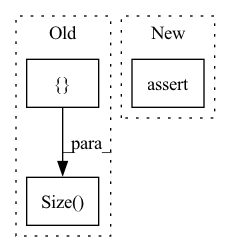

Pattern ID :9053

Before Change
// Text & Mel tensor sizes for each sample
expected_sizes = {
(torch.Size([1, 34]), torch.Size([1, 80, 205])),
(torch.Size([1, 29]), torch.Size([1, 80, 218])),
(torch.Size([1, 44]), torch.Size([1, 80, 244])),
}
called_samples = [call[1][0] for call in process_batch.mock_calls]
After Change
assert checkpoint_dict["state_dict"] == MockedTacotron2._state_dict
assert checkpoint_dict["optimizer"] == MockedOptimizer._state_dict
assert checkpoint_dict["iteration"] == 2
assert checkpoint_dict["epoch"] == 1
shutil.rmtree(output_directory)
In pattern: SUPERPATTERN
Frequency: 3
Non-data size: 3
Instances
Fragment ID: 32944119
Project Name: benaandrew/voice-cloning-app
Commit Name: 32178c2291b4538279040d88ef9a5063e19f95af
Time: 2021-07-30
Author: bandrew01@qub.ac.uk
File Name: tests/test_training.py
M Class Name: AnonimousClass
N Class Name: AnonimousClass
M Method Name: test_training_a(7)
N Method Name: test_training_a(7)
M Parent Class:
N Parent Class:
M File Name: tests/test_training.py
N File Name: tests/test_training.py
M Start Line: 99
M End Line: 105
N Start Line: 84
N End Line: 121
'>
Before Change
if self.randomize_length is not None: // randomization improves generalization
// modify encode and decode lengths
encoder_length_probability, decoder_length_probability = Beta(*self.randomize_length).sample(
torch.Size([2])
)
// subsample a new/smaller encode length
new_encoder_length = int(Binomial(encoder_length, encoder_length_probability).sample())
After Change
)
encoder_length = sequence_length - decoder_length
assert decoder_length >= self.min_prediction_length
assert encoder_length >= self.min_encoder_length
if self.randomize_length is not None: // randomization improves generalization
// modify encode and decode lengths
'>
Fragment ID: 32944167
Project Name: jdb78/pytorch-forecasting
Commit Name: dca7d1855e95319a53bf0851474ef8d882f09d40
Time: 2020-07-25
Author: beitner.jan@bcg.com
File Name: pytorch_forecasting/data.py
M Class Name: TimeSeriesDataSet
N Class Name: TimeSeriesDataSet
M Method Name: __getitem__(2)
N Method Name: __getitem__(2)
M Parent Class: Dataset
N Parent Class: Dataset
M File Name: pytorch_forecasting/data.py
N File Name: pytorch_forecasting/data.py
M Start Line: 344
M End Line: 390
N Start Line: 349
N End Line: 398
'>
Before Change
labels=labels
)
self.assertEqual(loss_res.shape, torch.Size([]))
After Change
labels=labels
)
assert loss_res.shape == torch.Size([])
'>
Fragment ID: 32944136
Project Name: qdrant/quaterion
Commit Name: c90e1e0da254a3ca98757574c35b3c07b217fe22
Time: 2021-09-14
Author: andrey@vasnetsov.com
File Name: tests/test_contrastive_loss.py
M Class Name: TestContrastiveLoss
N Class Name: TestContrastiveLoss
M Method Name: test_forward(1)
N Method Name: test_forward(1)
M Parent Class:
N Parent Class: TestCase
M File Name: tests/test_contrastive_loss.py
N File Name: tests/test_contrastive_loss.py
M Start Line: 33
M End Line: 39
N Start Line: 37
N End Line: 37